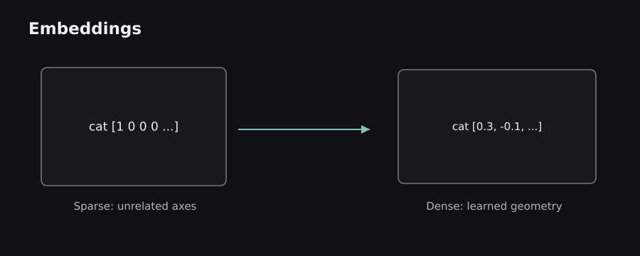
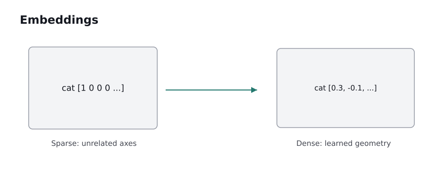

Earlier pipelines counted words and matched rules. This chapter introduces vector representations that are learned from text, then shows how recurrent models, attention, and language-model objectives build more useful representations of sentences.
6.0 — One-hot vectors and the problem with sparse meaning
Computers operate on numbers, so a language model needs a numeric representation of tokens. A one-hot vector assigns a separate coordinate to each item in a vocabulary. If the vocabulary is [cat, dog, river, book], cat becomes [1,0,0,0] and dog becomes [0,1,0,0]. All token vectors have the same length: the vocabulary size.
This is unambiguous but wasteful. With 50,000 tokens, each vector has 50,000 coordinates, mostly zeros. More importantly, the representation itself provides no concept of similarity: “cat” and “dog” are as far apart as “cat” and “river.” A machine can learn relationships using downstream weights, but the initial encoding contains none.
A bag-of-words (BoW) document vector counts token occurrences. For vocabulary [good, bad, camera], “good camera good” becomes [2,0,1]. Binary BoW records presence rather than counts. TF-IDF weighs terms by importance within a document and rarity across documents; common terms across the entire corpus contribute less than distinctive terms. Implementations differ in smoothing, normalization, and term-frequency choices.
The benefit is simplicity: sparse representations can be extraordinarily effective for exact-term classification and search. The downside is that contextual meaning and distant word relationships remain implicit.
6.1 — Embeddings, similarity, and vector geometry
An embedding represents an item as a dense, fixed-length vector such as [0.12, -0.37, 0.81, ...], learned so useful relationships can be reflected in geometric structure. Unlike one-hot representations, similar tokens can have related vectors. Dimensions generally do not have clean human labels such as “animalness” or “happiness”; meaning is distributed across them.
Cosine similarity compares the angle between two nonzero vectors: cos(x,y)=(x·y)/(|x||y|). A value near 1 means similar direction, near 0 means roughly orthogonal, and near -1 means opposite direction. This does not guarantee true semantic equivalence. Cosine similarity is only as useful as the embedding model and the data on which it learned.
For example, a search engine might embed the query “refund for damaged order” and retrieve sentences mentioning “replacement policy for broken products,” even if their exact words differ. But a model may miss a product code or confuse two entities with similar descriptions. Hybrid retrieval keeps lexical matching alongside dense similarity to cover both exact and semantic signals.
 
Analogy: embedding space is like a map where nearby locations have related properties. It is not a literal map of human knowledge: distances change with training objectives, languages, domains, and vector normalization.
6.2 — Word2Vec: learning from nearby words
Word2Vec trains shallow neural objectives on word-context relationships. Its central premise is the distributional hypothesis: words occurring in similar surroundings often have related meanings. In Continuous Bag of Words (CBOW), context words help predict a center word. In Skip-gram, the center word helps predict nearby context words.
Take “the small cat sleeps quietly”. For a context window of two around “cat,” CBOW could use nearby words to predict “cat”; Skip-gram could use “cat” to predict “small” and “sleeps.” Repeating this over large text produces vectors adjusted by gradient-based learning. Techniques such as negative sampling can make training more efficient than evaluating a full-vocabulary softmax for every example.
What the vectors capture: related words may cluster, and some word relationships can be reflected in vector offsets. The famous king–queen example is an illustration of a tendency, not a universal algebraic law. Static Word2Vec normally assigns a single vector to “bank,” even though rivers and financial accounts are different meanings.
Trade-off: CBOW can be efficient with frequent words, while Skip-gram can work well for some rare-word relationships. Results depend on context window, corpus, sampling, vector dimension, and training recipe, so absolute comparisons should not be made without controlled evaluation.
6.3 — GloVe and subword-aware embeddings
GloVe (Global Vectors) is another approach to learning dense word representations. Rather than predicting nearby words one example at a time, it learns from global co-occurrence statistics: how frequently words appear near each other across a corpus. The model adjusts word vectors so their dot products help explain ratios or logarithms of co-occurrence counts.
This reflects a general insight: words are characterized partly by the company they keep. Word2Vec emphasizes predictive local context; GloVe uses count-based global context. Both produce static embeddings, meaning a token normally has one learned vector regardless of the sentence where it is used.
FastText addresses another problem by representing words through character n-grams as well as whole-word information. The spelling of “playing” contains useful fragments related to “play,” and subword composition can help with rare or unseen forms. That is particularly helpful in morphologically rich languages where words appear in many inflected forms.
A caution: similarity in a vector space can reflect undesirable stereotypes or corpus biases. Models reproduce statistical regularities from text, whether those regularities are useful or harmful. This matters when embeddings influence hiring, recommendations, or decisions about people.
6.4 — Language models and predicting sequences
A language model assigns probabilities to sequences of tokens. By the probability chain rule, the probability of a sequence can be factored into conditional probabilities: P(w1,...,wn)=P(w1)×P(w2|w1)×...×P(wn|w1,...,wn-1). A causal language model learns to predict the next token from earlier tokens.
A classical n-gram language model approximates long history with a short context. A trigram model might estimate the next word from only the preceding two words. This is simple and interpretable but suffers from sparse counts: many reasonable phrases never appear in training. Smoothing spreads probability mass to unseen sequences so the model does not declare every new phrase impossible.
A neural language model replaces exact context tables with trainable embeddings and hidden layers. Its numeric representations can generalize between related phrases. Perplexity is a common evaluation measure of next-token prediction quality; intuitively, lower perplexity indicates less surprise on the evaluation text, but comparisons require the same tokenization, test distribution, and measurement setup.
Key distinction: predicting plausible next tokens can teach broad language patterns, but it does not guarantee factual correctness, source attribution, or grounded understanding of a particular user question.
6.5 — Recurrent neural networks: passing information forward
A recurrent neural network (RNN) processes a sequence step by step and maintains a hidden state. A simple update is h_t = tanh(Wx_t + Uh_(t-1) + b). The current state combines the current input with information carried from the previous step. The same weight matrices are reused across every position.
For “The package was not delivered”, the state after reading “not” should influence how later words are interpreted. This makes recurrence more expressive than bag-of-words because word order matters. During training, backpropagation through time unfolds the recurrent updates and propagates gradients through them.
However, information must travel across every intermediate step. Over long sequences, derivatives repeatedly multiply through transformations. They can shrink toward zero (vanishing gradients) or grow uncontrollably (exploding gradients). Gradient clipping can limit explosion; gated architectures address some long-distance memory problems.
An RNN is inherently sequential along the time dimension: state h_t depends on h_(t-1). Modern hardware can batch examples, but cannot compute every dependent state independently in one step. This limitation becomes important for large-scale language-model training.
6.6 — LSTMs, GRUs, and bidirectional sequence models
A Long Short-Term Memory (LSTM) network introduces a cell state and gates. The forget gate decides how much previous state to retain; the input gate determines what new information to add; the output gate controls what to expose as the hidden state. The core cell update is C_t=f_t⊙C_(t-1)+i_t⊙C̃_t, where ⊙ means elementwise multiplication.
A Gated Recurrent Unit (GRU) simplifies the design by maintaining a single primary state with reset and update gates. It often uses fewer parameters than a comparably sized LSTM, but neither is universally superior. Both mitigate some shortcomings of plain recurrence without eliminating every challenge.
Bidirectional RNNs/LSTMs process a completed sequence in both directions and combine the resulting representations. A word can then depend on earlier and later words. This is useful for tagging and classification, but not as a straightforward causal next-token generator because future tokens are unavailable at generation time.
Analogy: the LSTM cell acts like a notebook with controlled erase, write, and read operations. The analogy is imperfect: the gates are learned continuous numbers, not conscious decisions, and memory is represented by real-valued state vectors rather than discrete written facts.
6.7 — Encoder–decoder models and the fixed-vector bottleneck
A sequence-to-sequence (seq2seq) model maps one sequence to another, often with different lengths. A traditional architecture has an encoder RNN that reads the source sentence and a decoder RNN that produces the target sentence. Translation is a natural example: an English input maps to a Tamil or French output.
Early architectures could compress the input into a single final state, then ask the decoder to generate the whole translation from that state. This creates a fixed-vector bottleneck: every meaningful detail in a long sentence must survive inside one vector. As sentence length increases, the decoder may lose distant information.
At generation step t, the decoder estimates a distribution for the next target token using its current state and information from the encoded source. During supervised training, teacher forcing often supplies the real previous target token instead of the model's previous prediction. During inference, the model must condition on its own generated tokens; this difference can contribute to error accumulation.
The practical insight is architectural: a system benefits when it can access the relevant part of an input when needed, instead of expecting one compressed summary to preserve every detail perfectly.
6.8 — Additive attention and the breakthrough before Transformers
Attention gives the decoder a changing view of the encoded source. Rather than looking only at the encoder's final hidden state, it compares the current decoder state with every encoder state, computes alignment scores, normalizes them, and forms a weighted sum called a context vector.
Imagine translating “The red car stopped suddenly.” When outputting the translated word for “red,” the decoder can place greater weight on the source position containing “red”; when outputting the word for “stopped,” it can shift focus. These weights are learned from the translation objective. Attention weights are useful computational signals, but should not automatically be treated as faithful explanations of a model's reasoning.
Additive attention (Bahdanau attention) uses a small feed-forward scoring function. Multiplicative or dot-product attention (Luong-style) compares vector representations through products. Both allow source positions to contribute differently at each target step.
The essential sequence is score → normalize → weighted average → decoder output. The next chapter generalizes this idea: if attention already helps a decoder look across positions, can we create representations using attention directly, instead of processing tokens through recurrence first?


6.9 — Contextual embeddings and the road to modern NLP
Static embeddings give “bank” one vector. Contextual embeddings give a token different representations depending on surrounding words: compare the vector for “bank” in a financial sentence with the vector for “bank” in a river sentence. The token identity may be the same, but hidden representations become context-dependent.
This shift also changes how models are reused. Instead of training a new text classifier from raw inputs every time, a large model can be pretrained on broad text and then fine-tuned for sentiment, entity extraction, or document classification. Learned language patterns transfer across tasks, sometimes with far less labeled data than a model trained from scratch would need.
Transfer learning has limitations. Language, cultural context, domain vocabulary, input length, and pretrained-data bias all affect results. A model trained on news articles can misread medical notes or informal code-switched chats. Fine-tuning should therefore be evaluated on the target environment rather than assumed to work.
Chapter synthesis: text can be represented as sparse counts, static learned vectors, or context-dependent vectors. Recurrence gave NLP sequence awareness; gating improved memory; encoder–decoder attention let models access the relevant source positions dynamically. Transformers will replace the recurrent dependency with more parallel attention-based blocks.
Sources and further reading
These sources supplement the original explanations. The uploaded PDFs and cheatsheets informed the topic coverage; their illustrations and prose are not republished.